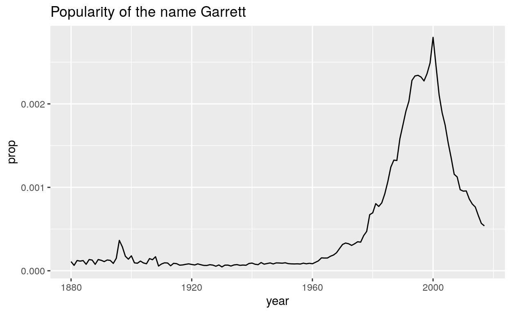
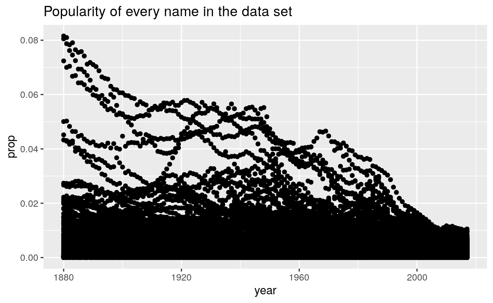
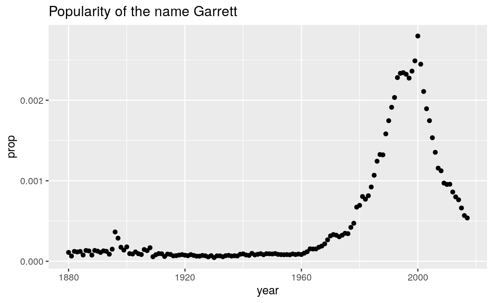
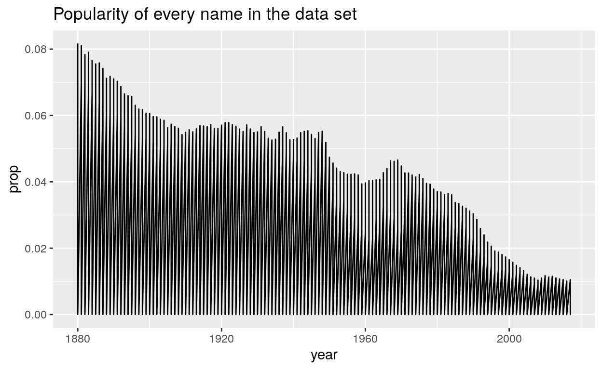

In this case study, you will explore the popularity of your own name over time. Along the way, you will master some of the most useful functions for isolating variables, cases, and values within a data frame:
select() and filter(), which let you extract rows and columns from a data framearrange(), which lets you reorder the rows in your data%>%, which organizes your code into reader-friendly “pipes”This tutorial uses the core tidyverse packages, including ggplot2, tibble, and dplyr, as well as the babynames package. All of these packages have been pre-installed and pre-loaded for your convenience.
Click the Next Topic button to begin.
You can use the data in babynames to make graphs like this, which reveal the history of a name, perhaps your name.

But before you do, you will need to trim down babynames. At the moment, there are more rows in babynames than you need to build your plot.
To see what I mean, consider how I made the plot above: I began with the entire data set, which if plotted as a scatterplot would’ve looked like this.

I then narrowed the data to just the rows that contain my name, before plotting the data with a line geom. Here’s how the rows with just my name look as a scatterplot.

If I had skipped this step, my line graph would’ve connected all of the points in the large data set, creating an uninformative graph.

Your goal in this section is to repeat this process for your own name (or a name that you choose). Along the way, you will learn a set of functions that isolate information within a data set.
This type of task occurs often in Data Science: you need to extract data from a table before you can use it. You can do this task quickly with three functions that come in the dplyr package:
Each function takes a data frame or tibble as it’s first argument and returns a new data frame or tibble as its output.
select() extracts columns of a data frame and returns the columns as a new data frame. To use select(), pass it the name of a data frame to extract columns from, and then the names of the columns to extract. The column names do not need to appear in quotation marks or be prefixed with a $; select() knows to find them in the data frame that you supply.
Use the example below to get a feel for select(). Can you extract just the name column? How about the name and year columns? How about all of the columns except prop?
select(babynames, name, sex)# A tibble: 1,924,665 x 2
name sex
<chr> <chr>
1 Mary F
2 Anna F
3 Emma F
4 Elizabeth F
5 Minnie F
6 Margaret F
7 Ida F
8 Alice F
9 Bertha F
10 Sarah F
# … with 1,924,655 more rowsselect(babynames, name)
select(babynames, name, year)
select(babynames, year, sex, name, n)You can also use a series of helpers with select(). For example, if you place a minus sign before a column name, select() will return every column but that column. Can you predict how the minus sign will work here?
select(babynames, -c(n, prop))The table below summarizes the other select() helpers that are available in dplyr. Study it, and then click “Continue” to test your understanding.
| Helper Function | Use | Example |
|---|---|---|
| - | Columns except | select(babynames, -prop) |
| : | Columns between (inclusive) | select(babynames, year:n) |
| contains() | Columns that contains a string | select(babynames, contains("n")) |
| ends_with() | Columns that ends with a string | select(babynames, ends_with("n")) |
| matches() | Columns that matches a regex | select(babynames, matches("n")) |
| num_range() | Columns with a numerical suffix in the range | Not applicable with babynames |
| one_of() | Columns whose name appear in the given set | select(babynames, one_of(c("sex", "gender"))) |
| starts_with() | Columns that starts with a string | select(babynames, starts_with("n")) |
filter() extracts rows from a data frame and returns them as a new data frame. As with select(), the first argument of filter() should be a data frame to extract rows from. The arguments that follow should be logical tests; filter() will return every row for which the tests return TRUE.
For example, the code chunk below returns every row with the name “Sea” in babynames.
filter(babynames, name == "Sea")## # A tibble: 4 x 5
## year sex name n prop
## <dbl> <chr> <chr> <int> <dbl>
## 1 1982 F Sea 5 0.00000276
## 2 1985 M Sea 6 0.00000312
## 3 1986 M Sea 5 0.0000026
## 4 1998 F Sea 5 0.00000258To get the most from filter, you will need to know how to use R’s logical test operators, which are summarised below.
| Logical operator | tests | Example |
|---|---|---|
| > | Is x greater than y? |
x > y |
| >= | Is x greater than or equal to y? |
x >= y |
| < | Is x less than y? |
x < y |
| <= | Is x less than or equal to y? |
x <= y |
| == | Is x equal to y? |
x == y |
| != | Is x not equal to y? |
x != y |
| is.na() | Is x an NA? |
is.na(x) |
| !is.na() | Is x not an NA? |
!is.na(x) |
See if you can use the logical operators to manipulate our code below to show:
n (Hint: this should return an empty data set).filter(babynames, name == "Sea")filter(babynames, prop >= 0.08)
filter(babynames, name == "Khaleesi")
filter(babynames, is.na(n))When you use logical tests, be sure to look out for two common mistakes. One appears in each code chunk below. Can you find them? When you spot a mistake, fix it and then run the chunk to confirm that it works.
filter(babynames, name = "Sea")filter(babynames, name == "Sea")"Good Job! Remember to use == instead of = when testing for equality."filter(babynames, name == Sea)filter(babynames, name == "Sea")"Good Job! As written this code would check that name is equal to the contents of the object named Sea, which does not exist."When you use logical tests, be sure to look out for these two common mistakes:
= instead of == to test for equality.name == Abby, instead of name == "Abby"If you provide more than one test to filter(), filter() will combine the tests with an and statement (&): it will only return the rows that satisfy all of the tests.
To combine multiple tests in a different way, use R’s Boolean operators. For example, the code below will return all of the children named Sea or Anemone.
filter(babynames, name == "Sea" | name == "Anemone")## # A tibble: 5 x 5
## year sex name n prop
## <dbl> <chr> <chr> <int> <dbl>
## 1 1982 F Sea 5 0.00000276
## 2 1985 M Sea 6 0.00000312
## 3 1986 M Sea 5 0.0000026
## 4 1998 F Sea 5 0.00000258
## 5 2012 F Anemone 6 0.0000031You can find a complete list or base R’s boolean operators in the table below.
| Boolean operator | represents | Example |
|---|---|---|
| & | Are both A and B true? |
A & B |
| |
Are one or both of A and B true? |
A | B |
| ! | Is A not true? |
!A |
| xor() | Is one and only one of A and B true? |
xor(A, B) |
| %in% | Is x in the set of a, b, and c? |
x %in% c(a, b, c) |
| any() | Are any of A, B, or C true? |
any(A, B, C) |
| all() | Are all of A, B, or C true? |
all(A, B, C) |
Use Boolean operators to alter the code chunk below to return only the rows that contain:
filter(babynames, name == "Sea" | name == "Anemone")# A tibble: 5 x 5
year sex name n prop
<dbl> <chr> <chr> <int> <dbl>
1 1982 F Sea 5 0.00000276
2 1985 M Sea 6 0.00000312
3 1986 M Sea 5 0.0000026
4 1998 F Sea 5 0.00000258
5 2012 F Anemone 6 0.0000031 filter(babynames, name == "Sea", sex == "F")
filter(babynames, n == 5 | n == 6, year == 1880)
filter(babynames, name %in% c("Acura", "Lexus", "Yugo"))Logical tests also invite two common mistakes that you should look out for. Each is displayed in a code chunk below, one produces an error and the other is needlessly verbose. Diagnose the chunks and then fix the code.
filter(babynames, 10 < n < 20)filter(babynames, 10 < n, n < 20)"Good job! You cannot combine two logical tests in R without using a Boolean operator (or at least a comma between filter arguments)."filter(babynames, n == 5 | n == 6 | n == 7 | n == 8 | n == 9)filter(babynames, n %in% c(5, 6, 7, 8, 9))"Good job! Although the first code works, you should make your code more concise by collapsing multiple or statements into an %in% statement when possible."When you combine multiple logical tests, be sure to look out for these two common mistakes:
| instead of %in%, e.g. x == 1 | x == 2 | x == 3 instead of x %in% c(1, 2, 3)arrange() returns all of the rows of a data frame reordered by the values of a column. As with select(), the first argument of arrange() should be a data frame and the remaining arguments should be the names of columns. If you give arrange() a single column name, it will return the rows of the data frame reordered so that the row with the lowest value in that column appears first, the row with the second lowest value appears second, and so on. If the column contains character strings, arrange() will place them in alphabetical order.
Use the code chunk below to arrange babynames by n. Can you tell what the smallest value of n is?
arrange(babynames, n)"Good job! The compiler of `babynames` used 5 as a cutoff; a name only made it into babynames for a given year and gender if it was used for five or more children."If you supply additional column names, arrange() will use them as tie breakers to order rows that have identical values in the earlier columns. Add to the code below, to make prop a tie breaker. The result should first order rows by value of n and then reorder rows within each value of n by values of prop.
arrange(babynames, n)# A tibble: 1,924,665 x 5
year sex name n prop
<dbl> <chr> <chr> <int> <dbl>
1 1880 F Adelle 5 0.0000512
2 1880 F Adina 5 0.0000512
3 1880 F Adrienne 5 0.0000512
4 1880 F Albertine 5 0.0000512
5 1880 F Alys 5 0.0000512
6 1880 F Ana 5 0.0000512
7 1880 F Araminta 5 0.0000512
8 1880 F Arthur 5 0.0000512
9 1880 F Birtha 5 0.0000512
10 1880 F Bulah 5 0.0000512
# … with 1,924,655 more rowsarrange(babynames, n, prop)If you would rather arrange rows in the opposite order, i.e. from large values to small values, surround a column name with desc(). arrange() will reorder the rows based on the largest values to the smallest.
Add a desc() to the code below to display the most popular name for 2015 (the largest year in the dataset) instead of 1880 (the smallest year in the dataset).
arrange(babynames, year, desc(prop))# A tibble: 1,924,665 x 5
year sex name n prop
<dbl> <chr> <chr> <int> <dbl>
1 1880 M John 9655 0.0815
2 1880 M William 9532 0.0805
3 1880 F Mary 7065 0.0724
4 1880 M James 5927 0.0501
5 1880 M Charles 5348 0.0452
6 1880 M George 5126 0.0433
7 1880 M Frank 3242 0.0274
8 1880 F Anna 2604 0.0267
9 1880 M Joseph 2632 0.0222
10 1880 M Thomas 2534 0.0214
# … with 1,924,655 more rowsarrange(babynames, desc(year), desc(prop))Think you have it? Click Continue to test yourself.
Which name was the most popular for a single gender in a single year? In the code chunk below, use arrange() to make the row with the largest value of prop appear at the top of the data set.
arrange(babynames, desc(prop))Now arrange babynames so that the row with the largest value of n appears at the top of the data frame. Will this be the same row? Why or why not?
arrange(babynames, desc(n))
# The number of children represented by each proportion grew
# over time as the population grew "The number of children represented by each proportion grew over time as the population grew."Notice how each dplyr function takes a data frame as input and returns a data frame as output. This makes the functions easy to use in a step by step fashion. For example, you could:
name and n columns from the resultboys_2015 <- filter(babynames, year == 2015, sex == "M")
boys_2015 <- select(boys_2015, name, n)
boys_2015 <- arrange(boys_2015, desc(n))
boys_2015## # A tibble: 14,024 x 2
## name n
## <chr> <int>
## 1 Noah 19613
## 2 Liam 18355
## 3 Mason 16610
## 4 Jacob 15938
## 5 William 15889
## 6 Ethan 15069
## 7 James 14799
## 8 Alexander 14531
## 9 Michael 14413
## 10 Benjamin 13692
## # … with 14,014 more rowsThe result shows us the most popular boys names from 2015, which is the most recent year in the data set. But take a look at the code. Do you notice how we re-create boys_2015 at each step so we will have something to pass to the next step? This is an inefficient way to write R code.
You could avoid creating boys_2015 by nesting your functions inside of each other, but this creates code that is hard to read:
arrange(select(filter(babynames, year == 2015, sex == "M"), name, n), desc(n))The dplyr package provides a third way to write sequences of functions: the pipe.
The pipe operator %>% performs an extremely simple task: it passes the result on its left into the first argument of the function on its right. Or put another way, x %>% f(y) is the same as f(x, y). This piece of code punctuation makes it easy to write and read series of functions that are applied in a step by step way. For example, we can use the pipe to rewrite our code above:
babynames %>%
filter(year == 2015, sex == "M") %>%
select(name, n) %>%
arrange(desc(n))## # A tibble: 14,024 x 2
## name n
## <chr> <int>
## 1 Noah 19613
## 2 Liam 18355
## 3 Mason 16610
## 4 Jacob 15938
## 5 William 15889
## 6 Ethan 15069
## 7 James 14799
## 8 Alexander 14531
## 9 Michael 14413
## 10 Benjamin 13692
## # … with 14,014 more rowsAs you read the code, pronounce %>% as “then”. You’ll notice that dplyr makes it easy to read pipes. Each function name is a verb, so our code resembles the statement, “Take babynames, then filter it by name and sex, then select the name and n columns, then arrange the results by descending values of n.”
dplyr also makes it easy to write pipes. Each dplyr function returns a data frame that can be piped into another dplyr function, which will accept the data frame as its first argument. In fact, dplyr functions are written with pipes in mind: each function does one simple task. dplyr expects you to use pipes to combine these simple tasks to produce sophisticated results.
I’ll use pipes for the remainder of the tutorial, and I will expect you to as well. Let’s practice a little by writing a new pipe in the chunk below. The pipe should:
name and n columnsTry to write your pipe without copying and pasting the code from above.
babynames %>%
filter(year == 2015, sex == "F") %>%
select(name, n) %>%
arrange(desc(n))You’ve now mastered a set of skills that will let you easily plot the popularity of your name over time. In the code chunk below, use a combination of dplyr and ggplot2 functions with %>% to:
babynames to just the rows that contain your name and your sexyear on the x axis and prop on the y axisNote that the first argument of ggplot() takes a data frame, which means you can add ggplot() directly to the end of a pipe. However, you will need to switch from %>% to + to finish adding layers to your plot.
babynames %>%
filter(name == "Garrett", sex == "M") %>%
select(year, prop) %>%
ggplot() +
geom_line(aes(x = year, y = prop)) +
labs(title = "Popularity of the name Garrett")Together, select(), filter(), and arrange() let you quickly find information displayed within your data.
The next tutorial will show you how to derive information that is implied by your data, but not displayed within your data set.
In that tutorial, you will continue to use the %>% operator, which is an essential part of programming with the
Pipes help make R expressive, like a spoken language. Spoken languages consist of simple words that you combine into sentences to create sophisticated thoughts.
In the tidyverse, functions are like words: each does one simple task well. You can combine these tasks into pipes with %>% to perform complex, customized procedures.